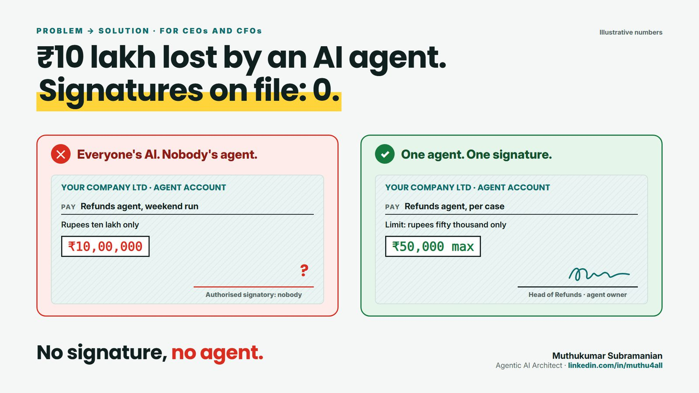

Everyone Says "AI-First". Who Signs When the AI Agent Loses ₹10 Lakh?
By Muthukumar Subramanian · Agentic AI Architect

Monday, 10 AM. The review meeting nobody wanted.
Over a long weekend, the refunds agent paid out ₹10 lakh it shouldn't have. It sat on top of a twelve-year-old order system, read a status code the wrong way, and did exactly what it was built to do, 340 times. (A composite, and the numbers are illustrative.)
The MD asks one question: "Whose agent is this?"
The CIO says the business asked for it. The business head says IT built it. The innovation team says the pilot was a success. The vendor says it's in the contract. Someone mentions the AI committee.
Twelve people in the room. "AI-first" is on the wall in the lobby.
Not one person's signature is on that agent.
A few days back I wrote about who pays when an agent gets it wrong. This is the question before that one. Your company wouldn't let a clerk release ₹10 lakh without an authorised signatory. Why does an agent get to?
The problem: everyone's AI, nobody's agent
Think about how a cheque works in an old-fashioned finance team. There's a signatory list. There's a limit against each name. Above the limit, a second signature. Nobody finds this strange. It's how a company says who's allowed to spend its money.
Agents arrived and skipped all of it. They've got a budget hidden inside an IT cost centre, a champion who has since moved to another project, and an "AI council" that meets monthly and approves nothing specific.
And there's a sneaky new trap. A working paper from Boston University and BCG (September 2026, not yet peer-reviewed) surveyed 1,261 managers, and 23% said their organisations list AI agents on org or workflow charts. Among those managers, drafts presented as coming from an "AI employee" rather than an "AI tool" got 17% fewer errors caught, and accountability shifted towards the AI system. The authors call it a hot potato.
Call an agent a digital employee, and your people may quietly stop checking its work. An employee can be held to account. An agent can't sign anything.
👉 [IMAGE: B-day09-2-in-article-who-signs-what.png]
Caption: Five decisions, five named signatures. If a row says "the committee", it's still unowned.
The solution: one agent, one signature
→ 1. A named product owner for every agent. One business person, not a team and not IT. The refunds agent belongs to the head of refunds, whose numbers rise and fall with it.
→ 2. A signed limit. In rupees. Per case and per day. Above it, the agent stops and asks.
→ 3. A budget line. The agent's running cost sits in the owner's budget, next to the value it's supposed to deliver.
→ 4. A small AI enablement team. Three to five people (illustrative) who own the platform, the guardrails and the evaluations. They help owners. They don't own the agents.
→ 5. A review date. Every signature expires. Every six months the owner re-signs, or the agent stops.
No signature, no agent.
👉 [IMAGE: B-day09-3-in-article-signature-ladder.png]
Caption: The same ladder your cheques already use, applied to an agent. Limits are illustrative.
👉 [GIF: B-day09-4-in-article-sign-here.gif]
Caption: Blank line to go-live. The agent doesn't run until a person signs.
The new roles around that signature
The owner shouldn't have to babysit the agent every day, and this is where new jobs are appearing.
In February, Harvard Business Review argued that companies need agent managers, comparing the role to the way product managers emerged in the software era. In practice that's someone who watches how an agent performs, tunes it and speaks for it. You'll also see AI Agent Manager, AgentOps Engineer and AI Operations Lead used for overlapping work. The titles are still settling.
The other role is the forward deployed engineer (FDE): an engineer who sits with the customer's team and ships the agent on their real systems. An FDE is often the first person to notice that nobody in the room owns the thing being built. A good one won't go live without a name on the sheet.
But be clear about one thing. An agent manager runs the agent. The business owner signs for it. Don't let the new title become the new hiding place.
The hard parts
→ Nobody wants to sign. Why would a business head take on a new risk? Tie the signature to the agent's upside too, and don't punish honest reporting.
→ Some agents cross departments. Pick one owner anyway. Shared ownership is how you got here.
→ Limits slow things down. Set them too low and people click "approve" without reading. Start tight, then raise them with evidence.
→ The legacy system isn't innocent. Often the agent read a badly documented old field correctly. The owner still needs someone who understands that old system.
→ I'm not giving legal advice. A signature here is an internal accountability rule. It doesn't settle what the law says. Ask your lawyers about that one.
The opportunity
→ For CEOs and CFOs: this week, list every agent and write one name beside it. The blanks are your risk register. It costs nothing.
→ For HR: add agent ownership to role descriptions and reviews, and start building the agent manager career path now.
→ For IT services firms and integrators: bring an FDE and an "agent ownership" setup with every deployment. Clients pay for sleep, not slides.
→ For founders: a simple signatory register for agents, with limits, expiry dates and audit trails, tied into approval systems companies already use.
"AI-first" is a slogan. A signature is a decision.
Your turn 👇
When an agent loses money, who should sign for it: the business head or the CIO? Pick one.
Tag the person in your company who'd go quiet if the MD asked, "Whose agent is this?"